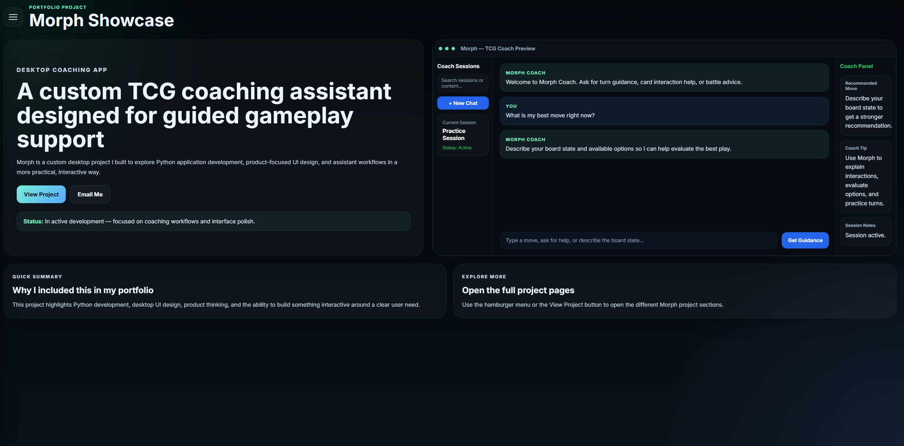

Featured Project
Morph AI Assistant
UI Design • Product Concept • Interactive Assistant
A custom project showcase built around Morph, a desktop AI assistant concept focused on guided interaction, product-style UI, and structured user flows.